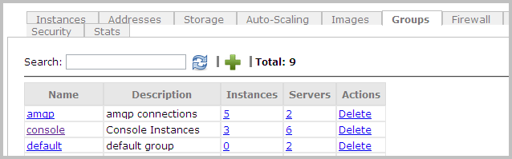

Managing Security Groups
| Permissions Required |
| To manage security groups, you must be a Nimbul administrator or a provider account administrator. For more information, see Permissions and Roles. |
To effectively manage security groups, you should first create firewall rules.
Topics covered on this page:
Add or Delete a Security Group
Apply Firewall Rules to Security Groups
Add or Delete a Security Group
Adding a Security Group
To add a security group, complete these steps:
- In the main Nimbul menu, click Provider Accounts.
- In the list of provider accounts, click the name of the account for which you want to manage groups.
Tip: You can use the Search box to quickly find the account (the list of accounts will automatically refresh to match the characters you type). - On the provider account details page, click the Groups tab.
 - Click the green plus sign at the top of the tab.
- In the pop-up that appears, specify a security group Name and Description. Both fields are required.
- Your new group will appear in the list. You can also search for it by typing characters in the Search box at the top of the tab.
You can assign security groups to servers on the Networking tab.
Deleting a Security Group
Note: Before you delete a security group, be sure you have assigned other security groups to all instances and servers currently using that group.
To delete a security group, complete these steps:
- View the Groups tab for the provider account by completing steps 1–3 above.
- In the Actions column in the row for the group you want to delete, click Delete. A warning message appears. Click OK.
The group will be deleted from the provider account and from any servers currently using the group.
Apply Firewall Rules to Security Groups
- View the Groups tab for the provider account by completing steps 1–3 above.
- In the list of groups, click the name of the security group you want to configure rules for.
Tip: You can use the Search box to quickly find the group. (The list of groups will automatically refresh as you type.)
If the security group does not yet exist, create it as described above. - Type the name of a firewall rule directly in the Add Firewall Rule field. As you type, names of existing firewall rules will appear.
- Click the name of the rule you want to apply to this group. You can continue to add rules by typing characters and selecting names.
- Click Done. The new rules will go into effect as soon as you add it to the group.
You can assign security groups to servers on the Networking tab.
Next: Setting Up SSH Access »